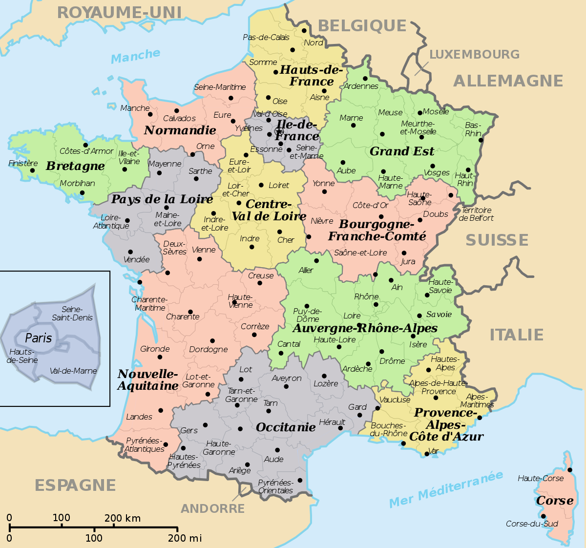

Франция
Фра́нция (фр. France, [fʁɑ̃s] Информация о файле слушать), официальное название Францу́зская Респу́блика
(фр. République française, [ʁe.py.blik fʁɑ̃.sɛz] Информация о файле слушать) — трансконтинентальное государство, включающее основную территорию в Западной Европе
и ряд заморских регионов и территорий. Столица — Париж. Девиз Республики — «Свобода, Равенство, Братство», её принцип — правление народа, народом и для народа.
Название страны происходит от этнонима древнегерманского племени франков, несмотря на то, что большинство населения Франции имеет смешанное галло-романское
происхождение и говорит на языке романской группы.Франция является ядерной державой, членом НАТО и одним из пяти постоянных членов Совета Безопасности ООН.
С 1950-х годов — одно из государств, участвующих в создании Европейского союза.
Население — 65 595 620 человек в метрополии и 66 991 000 человек — с учётом заморских владений (оценка на 1 января 2017), в том числе около 90 % — граждане
Франции. Верующие — преимущественно католики (80 % от числа верующих или 43 % от всего населения), при этом 45 % населения заявляют, что не принадлежат ни к одной
религии.Законодательный орган — двухпалатный парламент (Сенат и Национальное собрание). Административно-территориальное деление: 18 регионов
(13 в метрополии и 5 заморских регионов), включающих 101 департамент (96 в метрополии и 5 заморских департаментов)[12], 5 заморских сообществ и 3
административно-территориальных образования с особым статусом.